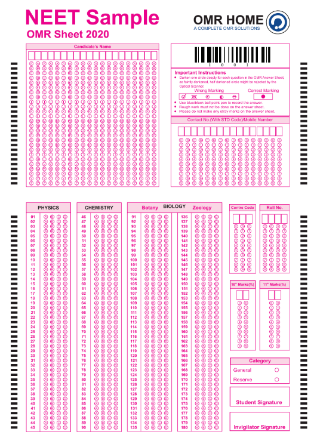
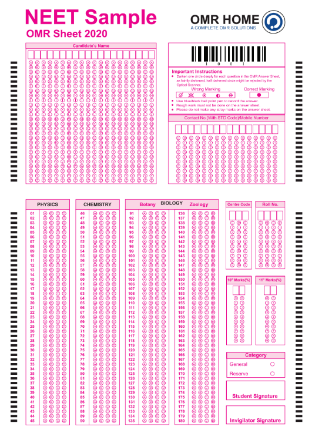
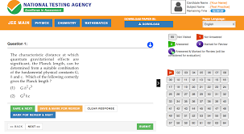
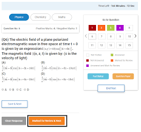
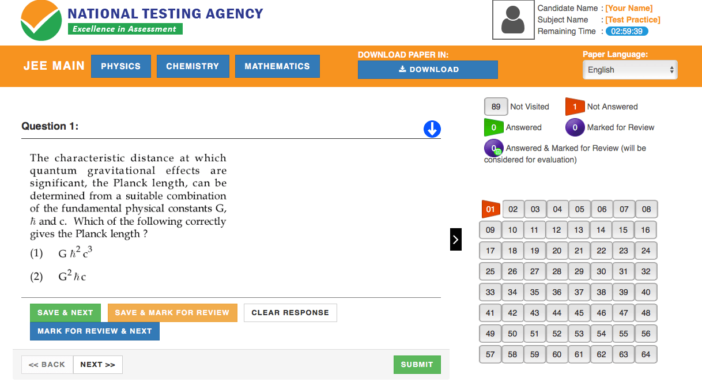
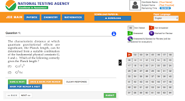
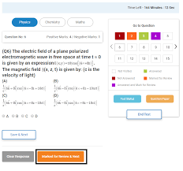
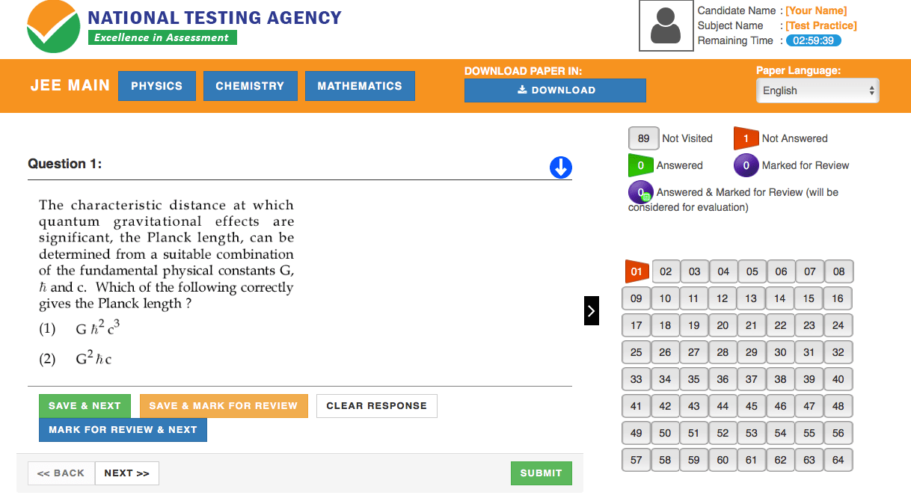

AN OVERVIEW OF NEET
NEET stands for National Eligibility cum Entrance Test.NEET is conducted by the National Testing Agency (NTA) for admission to undergraduate (MBBS/BDS/Ayush Courses) every year. It is a mandated requirement to qualify NEET Exam to study medical courses in India.
NOTE: we suppose most of you visiting our websites are from Nepal your application fee is INR 1400. But many students face difficulty to pay fees because of change in rule of transaction after demonetization in India.If you want us to help you out with it click here or contact us
OMR sheets means optical mark resolution sheet. If you have not given any exam before on OMR we recommend you to learn it. CLICK HERE

The number of questions is 180
Total Marks: 720
Durations: 03hours
roughly one min for one question
Well, statistically it is favourable to get benifited if you know that atleast one of the answer are wrong. But it is better to leave unattended if you are completely guessing as it might save you some time
For more information click hereFew importanat discussions
How many students will appear in NEET?
===>>Well, accurately it can not be said how many students are going to appear in NEET but rough estimation predicts it to be more than 17 lakh applicants and more than 16 lakh student might appear for the exam.What is the application fee for NEET ?
| Category | fees |
|---|---|
| General & OBC | INR 1400 + GST & service charges |
| SC/ST/PWD/Transgender | INR 750 + GST & service tax |
How is exam conducted?
===>Exam is conducted in offline mode you have to give exam with pen and paper.You will not be given any rough sheets you need to perform rough in the question sheets itself.OMR sheets are used so be carefull.OMR sheets means optical mark resolution sheet. If you have not given any exam before on OMR we recommend you to learn it. CLICK HERE

How is the question pattern ?
===>NEET test paper includes multiple-choice questions(MCQ) from Physics,Chemistry, and BiologyThe number of questions is 180
| subject | No.of questions | Total Marks |
|---|---|---|
| Physics | 45 | 180 |
| |Chemistry | 45 | 180 |
| Zoology | 45 | 180 |
| Botany | 45 | 180 |
Durations: 03hours
roughly one min for one question
What is the marking sceme?
===>We get 4 marks for one correct answer and -1 for any incorrect answer but we get no any negative marks for unattended question.Well, statistically it is favourable to get benifited if you know that atleast one of the answer are wrong. But it is better to leave unattended if you are completely guessing as it might save you some time
- Few informations on NEET
- You can enter into Ayush through NEET.
- Ayush course includes
- Bachelor of Ayurvedic Medicine and Surgery
- Bachelor of Homeopathic Medicine and Surgery.
- Bachelor of Naturopathy and Yoga Sciences.
- Bachelor of Siddha Medicine and Surgery.
- Bachelor of Unani Medicine and Surgery.
- NEET is conducted in 11 different language.But we think Nepali students might prefer English.
if you want to know about syllabus click here
if you want to know about reference books click here if you want books in Nepal click here(We request you to buy books from us we sell book in minimal profit and this is how we pay for maintainamce of website.Please give us a try 🙏 🙏 🙏 )
An Overview of JEE
JEE stands for Joint Entrance Examination. JEE is different from NEET its partner from medical field.JEE has two levels of examination one is mains and other is advanced.JEE mains is held twice a year in January and May and advanced is held ones in April every year.
Only those persons who qualify in JEE mains get to seat in JEE advanced and they can take admission in IIT.
Although having more than 1000 seats in IIT campus for foreign nationals merely less than 10 qualifications are made.It has been found that Nepali students are not much aware about it. Yes, IIt is hard to crack but remember being a foreighn student it becomes quite easy than your fellow Indian partner.You only have to get beyond 10,300 rank we suppose.It is wolrth a try bexcause IITians get paid in hundreed thousand of dollars as annual package.
Although,around 12 lakh student appear in JEE mains in two attempts only 2,24,000 students will be qualified for advanced.
NOTE: we suppose most of you visiting our websites are from Nepal your application fee is USD 75. But many students face difficulty to pay fees because of change in rule of transaction after demonetization in India.If you want us to help you out with it click here or contact us
To know more click here
You can not use the calculator but you will be provided with sufficient amount of rough papers. We have found this video has exact pattern of examination.please watch the way questions are displayed in screen CLICK HERE
  
Paper 1 (B.Tech) will be conducted for 300 marks, while paper 2 (B.Arch/B.Plan) will be conducted separately for 400 marks each.
Total Marks: 300
Durations: 03hours and 04 hours for benchmark disable students.
roughly 2min 20s for one question
Well, statistically it is favourable to get benifited if you know that atleast one of the answer are wrong. But it is better to leave unattended if you are completely guessing as it might save you some time.It is always wise to attend numerical type question.
For more information click hereOnly those persons who qualify in JEE mains get to seat in JEE advanced and they can take admission in IIT.
Although having more than 1000 seats in IIT campus for foreign nationals merely less than 10 qualifications are made.It has been found that Nepali students are not much aware about it. Yes, IIt is hard to crack but remember being a foreighn student it becomes quite easy than your fellow Indian partner.You only have to get beyond 10,300 rank we suppose.It is wolrth a try bexcause IITians get paid in hundreed thousand of dollars as annual package.
Few importanat discussions
How many students will appear in JEE ?
===>>As pere the trend we can say around 12 lakhs students are going to appear in JEE mains the trend says many students are going to appear in April than in January.Although,around 12 lakh student appear in JEE mains in two attempts only 2,24,000 students will be qualified for advanced.
What is the application fee for JEE ?
| Category | fees |
|---|---|
| General & OBC Boys | INR 650 + GST & service charges |
| SC/ST/PWD/Transgender/girls | INR 325 + GST & service tax |
| Candidates from SAARC countries | USD 75 |
| Candidates from Non SAARC countries | USD 75 |
To know more click here
How is exam conducted?
===>Exam is conducted in online mode.You have to go to examination center and attend the examination.You can not use the calculator but you will be provided with sufficient amount of rough papers. We have found this video has exact pattern of examination.please watch the way questions are displayed in screen CLICK HERE
  
How is the question pattern ?
===>As per JEE Main exam pattern 2021, each subject will have 20 MCQs and 10 Numerical Value Questions and out of 10 only 5 have to be done. According to the JEE Main 2021 exam pattern, both the papers will be conducted in online mode except for the Drawing test for B.Arch.Paper 1 (B.Tech) will be conducted for 300 marks, while paper 2 (B.Arch/B.Plan) will be conducted separately for 400 marks each.
| subject | No.of MCQ | No.of numerical | No.of numericals to be done | Total Marks |
|---|---|---|---|---|
| Physics | 20 | 10 | 5 | 100 |
| |Chemistry | 20 | 10 | 5 | 100 |
| Math | 20 | 10 | 5 | 100 |
Durations: 03hours and 04 hours for benchmark disable students.
roughly 2min 20s for one question
What is the marking sceme?
===>We get 4 marks for one correct answer and -1 for any incorrect answer but we get no any negative marks for unattended question and numerical type questionWell, statistically it is favourable to get benifited if you know that atleast one of the answer are wrong. But it is better to leave unattended if you are completely guessing as it might save you some time.It is always wise to attend numerical type question.
Few informations on JEE
- JEE mains and advanced is conducted in Kathmandu.|So students feel free to give a try.
- Exam is conducted in 13 languages but we bwlieve that you will feel comfortable to attend examination in English.
- IITans are all over we kn ow Sundar Pichai , we know flipkart is also founded by a IITian and many IITian are in wonderfull places.
- Actually it is freedom and growing environment in IIT that will help you grow.
if you want to know about syllabus click here
if you want to know about reference books click here if you want books in Nepal click here(We request you to buy books from us we sell book in minimal profit and this is how we pay for maintainamce of website.Please give us a try 🙏 🙏 🙏 )